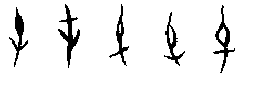
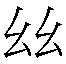

3  屯卦 水雷屯
屯卦 水雷屯
屯，元亨利貞，勿用有攸往，利建侯。初九，磐桓，利居貞，利建侯。六二，屯如邅如，乘馬班如，匪寇婚媾，女子貞不字，十年乃字。六三，即鹿无虞，惟入于林中。君子幾不如舍。往吝。六四，乘馬班如，求婚媾，往，吉无不利。九五，屯其膏，小貞吉，大貞凶。上六，乘馬班如，泣血漣如。
【卦名】
今本：屯 帛書：屯 歸藏：屯 秦簡：肫 易之義：肫 海昏：屯
屯卦在秦簡及帛書《易之義》中都作肫，肫應是屯字的假藉，因此屯卦卦名並無疑義。
屯的字義有三個層面。首先它是「難」，生命開始，面對成長的困難。因為困難而停頓，屯有停留、駐留之意，如屯兵，即駐兵；屯墾，為停留在某地開墾。停留開始累積能量，即積聚之義，通囤，如屯積、屯糧。若是人群的停留、聚集，那麼就通邨，村莊之義。因此屯是面對困難，停下腳步以積聚能量的意思。
屯甲骨文像植物發芽的樣子，字義也用作甲骨的單位，如一屯。古文中也會假借為純。于省吾認為屯是「春」的本字（《甲骨文字釋林》），通萅。

後來屯引申為難，《說文》：「難也，象艸木之初生，屯然而難。從屮貫一，一，地也，尾曲。」段注：「屮貫一者木剋土也，屈曲之者未能申也。乙部曰：春艸木冤曲而出，陰气尙彊，其出乙乙，屯字从屮而象其形也。」《彖傳》說「屯，剛柔始交而難生」。所以屯字像春天草木初生長，卷曲而尚未伸展開來，講的是生命剛開始所面臨的成長困難。
《序卦》：「有天地，然後萬物生焉，盈天地之間者唯萬物，故受之以屯，屯者盈也，屯者物之始生也。」除了「物之始生」，《序卦傳》還以「盈」解釋屯，盈者盈滿，此形容萬物始生而盈滿天地。
一般只以困難之「難」來解釋屯卦並不妥當。因為屯卦之難在於它是生命的開端，是開天闢地，剛柔開始相交之時的困難。比喻人事則是指創業惟艱、凡事起頭難。雖然這是困難的階段，但相對的，也是建立典範，設立制度，部署諸侯屏藩的最佳時機。
這也是為什麼在許多的春秋筮例裡，得屯卦者皆能夠得到諸侯之位。《左傳．閔公元年》畢萬筮問到晉國出仕，得屯之比。辛廖解釋說「屯固比入」，以屯為穩固、堅固之意。又說「合而能固，安而能殺，公侯之卦也」。
屯卦之「難」還有茂盛義。《彖傳》：「剛柔始交而難生。」「雷雨之動，滿盈。天造草昧，宜建侯而不寧。」此難字一語雙關，既是困難的難，又是萬物生長繁茂，即天造草昧之狀。詳見文後彖傳注。
【卦義】
屯卦為物始生而有難，駐留原地，穩固根基，屯墾而繁茂之義。
在卦序上屯是繼乾坤而來的第三卦，也是天地初開之後生物開始伸展進一步將繁茂的過程。《序卦傳》開宗明義就說：「有天地，然後萬物生焉，盈天地之間者唯萬物，故受之以屯。屯者盈也，屯者物之始生也。」天地即乾坤。屯卦即萬物開始生長，盈滿天地。
卦象外坎內震，動藏險中。外坎即外面有危險、挑戰。內震即藏動於內，伺機而動之義。動藏於內則外坎就是天險、屏障，但若不安於內，貿然而行，那麼坎就成為難以突破的實質危險。
得屯卦，雖面對困難，但困難只是挑戰，不等同於事情之不可為，應著重實力的累積，養精畜銳是最佳對策。因「屯」又有聚集、積聚的意思，如我們講「屯糧」、「屯積」。處屯之時，貿然行動固然危險，但守靜亦難有所成，動靜之間的最佳平衡應該在原地努力，致力於鞏固根基，培養實力，但不可輕易主動出擊，因此卦辭說「利貞」，「勿用有攸往」，「利建侯」。
就吉凶的論斷上，總體而言屯卦是一個偏凶之卦，特別是短期的事情來說，會面對艱困的挑戰。屯亦有亨通之道，但屯卦的亨通往往是在長時間的累積之後，特別是卜問大事時，往往需要長時間的努力。
屯卦的亨道在於足夠的抗壓性與積極的執行力，處事的陽剛與果決，否則難以救濟屯難的局勢。反之，如果處事柔弱，抗壓力不夠，那麼屯卦會是一個凶卦。也因此在各爻的論斷上，陽爻會偏吉，如初九及九五；陰爻則要有陽爻救濟則可逢凶化吉，如六四因與初九相應又與九五比應，因而得吉。
王弼《周易略例》：「此一卦，皆陰爻求陽也。屯難之世，弱者不能自濟，必依於彊，民思其主之時也。故陰爻皆先求陽，不召自往；馬雖班如，而猶不廢；不得其主，无所馮也。初體陽爻，處首居下，應民所求，合其所望，故大得民也。」
屯，元亨利貞，勿用有攸往，利建侯。
《彖》曰：屯，剛柔始交而難生，動乎險中，大亨貞。雷雨之動滿盈，天造草昧，宜建侯而不寧。
《象》曰：雲雷屯，君子以經綸。
《序卦》：有天地，然後萬物生焉，盈天地之間者唯萬物，故受之以屯，屯者盈也，屯者物之始生也。
《雜卦》：屯，見而不失其居。
帛書《易之義》：「肫者得之難也，蒙者得之隋也。」
【今解】
駐留在原地，匯聚了許多良好條件，宜於堅定守正。不要有遠行，利於建立諸侯。
建立諸侯比喻設立防禦之屏障，或布局人事。坎險在外可取象溝瀆，以溝瀆為天險，有防禦之效。屯卦策略為留在原地，屯兵駐留，若行動則坎變成危險，若只是留在原地則坎成保護之天險。
【字義】
勿用有攸往：「勿用」意思是「不要採取…行動」或是「不要做…事」的意思。「攸」為所，或遠的意思。勿用有攸往，不要有所往，不要有遠行，意思都是不要出遠門，不要去其他地方，宜於留在原地。屯卦也有「屯聚」，或是人群駐紮聚集在某地的意思，因此可把第一個屯視為駐紮、留在原地，則勿用有攸往文義與「屯」相呼應。停留在原地，不要遠行。
利建侯：利於建立諸侯。周天子建立諸侯以鞏固王權，其分封的諸侯主要為周天子的姬姓王族或是功臣，藉以做中央之屏藩，鞏固周天子之權。許慎《五經異義》：「《易》曰利建侯，侯者，王所親建，純臣也。」於現今之公司人事，可比喻為指派分公司或地區性的總經理。侯原義為箭耙，《說文》：「春饗所射侯也。从人从厂，象張布，矢在其下。天子射熊虎豹，服猛也；諸侯射熊豕虎；大夫射麋，麋，惑也；士射鹿豕，為田除害也。其祝曰：毋若不寧侯，不朝于王所，故伉而射汝也。」建侯亦有建立目標之隱喻。
雲雷屯，君子以經綸：雲雷為上下二體卦象，朱熹：「屯是陰陽未通之時。」「坎不言水而言雲者，未通之意。」《小象》九五：「屯其膏，施未光也。」《彖傳》以屯卦為乾元「雲行雨施」之卦，所以說「雷雨之動滿盈」，《象傳》以屯為雲行雨未施，乾道未行之卦，所以說「雲雷屯」，朱子說的「未通」。兩傳差異有兩種可能。一是，兩傳為不同作者，對於經文有不同理解與詮釋。二是，《象傳》專門就爻象而論。然而，《大象》全都直接取上下二體來闡述總體卦義，因此第二個論點很難成立。但若就卦與爻的差異來看，雖然屯卦為雲行雨施之卦，但九五主爻，就其德性來說，可能不符合此德，因此就九五爻而論「施未光」是合理的，兩者並不衝突。
【筮例】
《國語‧晉語四》重耳親筮得晉國：
由於晉惠公與晉懷公的不仁不義，而讓秦穆公決定擁立重耳為晉君。重耳到秦國時，秦穆公以對待國君之禮對待他。在秦國期間，重耳親自問筮是否能夠取回晉國的政權，「得貞屯悔豫，皆八也」。
筮史解卦都說不吉：「閉而不通，爻無為也。」
只有司空季子說吉：「是在周易，皆利建侯。不有晉國，以輔王室，安能建侯？我命筮曰『尚有晉國』，筮告我曰『利建侯』，得國之務也，吉孰大焉！震，車也。坎，水也。坤，土也。屯，厚也。豫，樂也。車班外內，順以訓之，泉原以資之，土厚而樂其實。不有晉國，何以當之？震，雷也，車也。坎，勞也，水也，眾也。主雷與車，而尚水與眾。車有震，武也。眾而順，文也。文武具，厚之至也。故曰屯。其繇曰：『元亨利貞，勿用有攸往，利建侯。』主震雷，長也，故曰元。眾而順，嘉也，故曰亨。內有震雷，故曰利貞。車上水下，必伯。小事不濟，壅也。故曰『勿用有攸往』，一夫之行也。眾順而有武威，故曰『利建侯』。坤，母也。震，長男也。母老子彊，故曰豫。其繇曰：『利建侯行師。』居樂、出威之謂也。是二者，得國之卦也。」
司空季子以屯和豫的卦辭都有「利建侯」而斷定重耳會得到晉國，並進一步以八卦卦象做深入的分析。後來重耳果然成為晉國國君。
《左傳．昭公七年》孔成子立衛靈公：
孔成子為衛國的接班人人選分別問了一卦，首先問夢境中衛國始祖康叔所指定的「元」是否適合擁有衛國，主持社稷，結果得到屯卦，卦辭說：「元亨利貞，勿用有攸往，利建侯。」接著又問，立「孟縶」是否較適合，得到屯之比，即屯初九：「磐桓，利居貞，利建侯。」後來孔成子以繇辭有「元亨」（以元為亨），並把「利建侯」解釋為宜於「建立諸侯」為由而立元（孟縶為長子則不需再立），「元」也就是後來的衛靈公。
初九，磐桓，利居貞，利建侯。
《象》曰：雖磐桓，志行正也。以貴下賤，大得民也。
【今解】
有磐石及大柱，根基及基礎非常穩固，宜於貞定，利於建立諸侯。
這一爻為屯卦最開始的時候，此時正是建立根本，穩定基礎的時機。震為動，動處於內而不進，外有坎，互卦有艮，為動而不進之象。故曰磐桓，利居貞。
【字義】
磐桓：或作「盤桓」、「般桓」。有兩種解釋，一是難進之貌，類似於現今的徘徊。《象傳》：「雖磐桓，志行正也。」這是以磐桓為難進之貌，也是多數易學家所採用。磐或作般、盤，般即盤旋之義。《說文》：「般，辟也，象舟之旋，从舟从殳，殳所以旋也。」段注：「盤當作般，般辟，漢人語，謂退縮旋轉之皃也。《大射儀》賓辟注曰：『辟，逡遁不敢當盛。』《釋言》曰：『般，還也。』還者今之環字，旋也。荀爽注易曰：『盤桓者，動而退也。』般之本義如是。」帛書本作「半遠」，「遠」字形近「還」，「還」音近「桓」，磐桓疑是「般還」，《禮記．投壺》：「賓再拜受，主人般還。」孔穎達：「主人見賓之拜，乃般曲折還。」般還即徘徊之後折返回來，即荀爽所說的「動而退也」。卦象為震之初，上有互體艮阻之，因此為動而未行之象。「般還」也通「盤旋」，因「還」通「旋」。二是以磐為磐石，桓為大柱，磐桓即磐石與大柱，比喻穩定的根基。房子有磐石及大柱，則結構穩固適於居住。俞琰：「磐，大石也，與漸六二之磐同。桓，柱也，《禮記．檀弓篇》所謂『桓楹』是也。橫渠張子曰：『磐桓猶言柱石。』或以磐桓為盤旋徘徊之義，誤矣，居不動也。
利居貞：有二義，一是利於貞定，堅定，就是處靜、處正，在原地而不出行。二是利於有關居住之卜問，貞做「問」。《說文》：「貞，卜問也。」
利建侯：宜於建立諸侯。侯或作矦，原義為箭靶，引申為諸侯。《說文》：「春饗所射矦也。」「天子射熊虎豹，服猛也；諸矦射熊豕虎；大夫射麋，麋，惑也；士射鹿豕，為田除害也。」利建侯，宜於建立諸侯。王弼：「得主則定。」孔穎達：「以其屯難之世，世道初創，其物未寧，故宜利建侯以寧之。此二句釋人事也。」建立諸侯為建立人事，以為治理之官長。《彖》曰：「宜建侯而不寧。」建侯以安定民心。而不寧，安定之義。
【筮例】
《左傳．閔公元年》畢萬問仕於晉：得到屯之比，屯卦初爻變。辛廖占之曰：「吉，屯固比入，吉孰大焉，其必蕃昌。震為土，車從馬，足居之，兄長之，母覆之，眾歸之。六體不易，合而能固，安而能殺，公侯之卦也。公侯之子孫，必復其始。」
六二，屯如邅如，乘馬班如。匪寇婚媾，女子貞不字，十年乃字。
《象》曰：六二之難，乘剛也。十年乃字，反常也。
【今解】
難行而無法前進的樣子，公母馬分開了。很壞的盜匪來求婚媾，女子因為守貞，因此一直未懷孕生子。十年之後，才終於懷孕生子。
此段言求婚過程的艱難，因此有乘馬分開之象。女子起初可能因為被逼婚、搶婚之故，所以不答應婚媾，因此「貞不字」，堅定守貞不生小孩。要等待十年之久，關係回復到正常而接納對方之後，才終於答應。「十年乃字」的十年比喻事情之艱難與需要長久的等待與經營。而前面之乘馬則隱喻「馬上」求成的急切。屯難之世，凡事當耐心經營，而不當急躁如匪寇。
六二乘陽，又居互體艮下，艱難而無法前進之象。虞翻曰：「震為馬作足，二乘初，故乘馬。」
【字義】
屯如邅如：兩種解釋，一是難以前進而原地盤旋之狀。二是人馬聚集而盤旋之狀。屯有二義：困難，或聚集。邅，音沾。「邅如」通解為徘迴貌。邅古代可能作亶，《說文》引作「驙如」：「駗驙也，从馬亶聲。《易》曰：乘馬驙如。」段注：「周易屯六二，屯如亶如，乘馬班如。亶俗作邅，宋時《經典釋文》不誤，許所據易蓋上句作駗如驙如，乘馬二字當為誤文。」亶音膽，誠實可信的樣子。
乘馬：有多種解釋。傳統以乘馬為騎馬，乘為騎乘之義。一，是以乘馬為四匹馬。乘的原始意思為騎乘，後來引申為車子的單位，因為古代諸侯王車子都是四馬在拉，所以「乘馬」意指四匹馬，亦可指兵車。《詩經》中經常可見「乘馬」一語，如「大叔于田，乘乘馬，執轡如組，兩驂如舞」、「駕我乘馬，說于株野」、「乘馬在廄，摧之秣之」、「路車乘馬」。此或言諸侯乘著乘馬田獵，因此後文有即鹿无虞，惟入於林中」的情節。二，一對公母馬，鄭玄：「馬牝牡曰乘。」牝為畜母，牡為畜父，乘馬就是用來當配種繁殖用的母馬和公馬，母的就是牝，如坤卦的「利牝馬之貞」，離卦「畜牝牛吉」。公的就是牡。乘作為單位，原為四匹馬，但引申又有成對之義。《詩經．大叔于田》：「大叔于田，乘乘馬，執轡如組，兩驂如舞。」《詩經．鴛鴦》：「乘馬在廄，摧之秣之。君子萬年，福祿艾之。」《左傳》昭公二十九年：「帝賜之乘龍，河、漢各二，各有雌雄。」《揚子．方言》：「雙雁曰乘。」
班如：《說文》：「班，分瑞玉。」班原義為將玉一分為二，若以「乘馬」為公母種馬，「乘馬班如」應該是指公馬與母馬交配結束而分開，或者是分開而未能交配，屯如邅如為兩馬交配困難不順之狀，才有後文的「匪寇婚媾，女子貞不字」。班引申又有分列、次序的意思。乘馬班如，乘馬的人群分成兩邊的樣子。傳統注解以班如為在原地打轉，或往回走，班師回朝的「班」，通般。虞翻：「班，躓也。馬不進，故班如矣。」躓為跌倒。程頤：「下馬為班，與馬異處也。」這是從「分」的意思引伸而來，以班為下馬。《爾雅》：「班，賦也。」《周禮》以頒為班，即頒布之意，與前後文文義不通。
匪寇婚媾：匪寇，即盜匪。匪為修飾辭，形容人很壞。寇，盜賊。匪寇，很壞的盜賊，即土匪。婚媾，結婚而交媾。或指婚合。媾為媾合之義，婚媾為透過結婚而媾合。匪寇婚媾意思為土匪來求婚媾。但傳統主要有兩種不同解釋。一、若不是盜賊來犯，就已順利完成婚姻。匪，非，否定的意思。或作「若非」，可譯作我們說的「要不是…」。王弼：「寇謂初也。无初之難，則與五婚矣，故曰匪寇婚媾也。」程頤：「設匪逼于寇難，則往求子婚媾矣。婚媾，正應也。寇，非理而至者。」二、作「匪寇，婚媾」，意思為來者不是賊寇，而是來求婚媾的。如朱熹：「然初非為寇也，乃求與己為婚媾耳。」李光地《折中》採用朱熹說法：「言彼乘馬者非寇，乃吾之婚媾也。」寇也有兩種解釋，一是寇敵、寇讎，也就是敵人或仇人的意思。二是盜賊。婚媾，女子嫁人為婚，再嫁、重婚為媾，婚媾即結婚、婚姻之意。媾原始意思為交媾，從冓字而來，即男女交媾。婚媾指結婚並交媾。鄭玄作「冓」，會合的意思：「冓，猶會也。」
女子貞不字：貞有兩種解釋，一是堅定，堅決。二是卜問。女子貞不字，女子堅決不懷孕生子。或者，女子卜問，則無法懷孕生子。字，懷孕、生子。不字，未能懷孕生子。《說文》：「字，乳也，从子在宀下。」段注：「人及鳥生子曰乳，獸曰產。」虞翻：「字，妊娠也。」孔穎達解釋為愛：「女子以守貞正，不受初九之愛，字訓愛也。」宋儒將字解釋作女子許嫁或嫁人。
六三，即鹿无虞，惟入于林中。君子幾，不如舍，往吝。
《象》曰：即鹿无虞，以從禽也。君子舍之，往吝窮也。
【今解】
到山林裡打獵，沒有守山林的人帶路就貿然進入，其危險可知。最好能知難而退。若一意前往，將自取其咎。
六三處下體震之上，互體艮之中，艮為山為麓，有入於林中之象。又艮山止之，有舍止之象。三多凶，六三不當位，以柔處屯難之世，又居危險之位。與其追逐，不如捨棄。《象曰》：「往吝，窮也。」追逐為有吝，因為這是窮困之道。
【字義】
即鹿：逐鹿。即，近。即鹿，逐鹿，追鹿。鹿也可作麓，「即鹿」也就是進入山麓。虞翻曰：「虞謂虞人，掌禽獸者。艮為山，山足稱鹿。鹿，林也。三變體坎，坎為藂木。山下，故稱林中。」依虞翻說法，鹿即山麓，山林。六三在互體艮山之下，山麓之象。王肅作麓：「麓，山足也。」據李光地《折中》，聽說郭京「曾得王輔嗣親手與韓康伯注底易本」，鹿當作麓。
虞：虞人，古時候專職掌管山林鳥獸的人。《周禮》有「山虞」及「澤虞」之職掌，鄭玄注：「虞，度也，度知山之大小及所生者。」《莊子．山木篇》：「今吾遊於雕陵而忘吾身，異鵲感吾顙，遊於栗林而忘真。栗林虞人以吾為戮，吾所以不庭也。」「栗林虞人」即是管理栗林的人。虞也可解釋為憂心，警戒。「無虞」為毫無警戒心、毫無戒備，「即鹿无虞」為毫無警戒心就直接追鹿或進入林中，此乃危險之舉。
君子幾，不如舍 ：君子貿然進入林中，有危險，不如捨棄。《爾雅．釋詁》：「幾，危也。」如《詩．大雅》：「天之降罔，維其幾矣。」《說文》：「微也，殆也。从从戍。戍，兵守也。而兵守者，危也。」幾有多種不同解釋，一是危險。二作微，引申為微妙，君子幾引申為君子知道事情之微妙處，能夠見機行事。三，近。君子幾，君子已近山林。四，王弼以幾為語助辭，無意義：「幾，辭也。」舍有兩種解釋，一是捨棄。二是停留，不要繼續前進。
往吝：《周易》以內至外為往，外至內為來。往，即前往、繼續追逐。吝，恨也，引申有羞辱義，往吝，繼續前將遭羞辱。朱熹《本義》：「若往逐而不舍，必致羞吝。」。馬融：「吝，恨。也。」或通遴，蒙初六「以往吝」《說文》引作「以往遴」：「遴，行難也，从辵聲。《易》曰：以往遴。」「君子幾，不如舍，往吝」，君子直接進入林中有危險，不如捨棄，前往的話會有困難。
六四，乘馬班如，求婚媾。往吉，无不利。
《象》曰：求而往，明也。
【今解】
騎著馬在原地打轉，想要求婚合。前往則吉，無所不利。
六四柔居陰位為當位，下與初九相應，上承九五。屯難之世，柔需剛助，六四雖處多懼之位（因多懼所以班如），但能得兩陽剛之助，所以有功，故「吉無不利」。《象傳》曰：「求而往，明也。」因六四可得九五比應之陽明。
【字義】
乘馬班如，求婚媾：見六二爻解釋。
九五，屯其膏，小貞吉，大貞凶。
《象》曰：屯其膏，施未光也。
【今解】
屯積美食自己享用，問小事吉，若是問大事則凶。
九五為陽剛居中之君位，五本是多功之位，但屯九五溺於私欲，所以只能做小事，無法做大事。
《小象》：「屯其膏，施未光也。」《大象》「雲雷屯」朱熹注：「坎不言水而言雲者，未通之意。」《彖傳》以屯卦為乾元「雲行雨施」之卦，所以說「雷雨之動滿盈」，《象傳》以屯為雲行雨未施，乾道未行之卦，所以說「雲雷屯」，朱子說的「未通」。就卦與爻的差異來看，雖然屯卦為雲行雨施之卦，但九五主爻，就其德性來說，可能不符合此德，因此就爻而論「施未光」。九五為屯卦治卦之主爻，原本五多功，但未能普施膏澤於下，六爻只有六四實受其惠，乃有偏私之施。
王弼以受惠者唯六二，但細察六爻，六二是「女子貞不字，十年乃字」，六四是「吉无不利」。其次，六四與九五為比應，屯難之世，二遠五而難濟，四近五而先得所濟。
【字義】
屯其膏：屯，屯積。膏，原意為豬油等一類油脂之物，古代被視為美味、美食。屯其膏，屯積美食，私藏美食。形容人之私心，藏著美食自己享用。此諷人君位高而心狹。九五本處最尊之位，可以嘉惠天下，但卻只知滿足私欲，屯積美食自己享用，不懂得如何膏澤於民。傳統上都將膏解釋作「膏澤」，即恩惠之意。虞翻曰：「坎雨稱膏。《詩》云：陰雨膏之，是其義也。」屯其膏意指君王屯積其膏澤而不願施惠於人民。但直接採取膏澤之意於文義不通，易經喜用「雙關」語，所以翻譯應當做美食解，並以美食暗喻膏澤，於文意較佳。
小貞吉，大貞凶：問小事為吉，大事為凶。貞此處做「卜問」解。貞字在易經中多數解釋為正、堅定。但此處解釋作卜問之意。「小貞」即「小事之問」，問小事。「大貞」為「大問」，所問者為大事。貞或可解作堅定、堅持，那麼此段可解釋為小小堅持為吉，太過堅持則為凶。傳統以正解釋貞，如孔穎達：「貞，正也。出納之吝謂之有司，是小正為吉。若大人不能恢弘博施，是大正為凶。」朱熹：「占者以處小事，則守正猶可獲吉，以處大事，則雖正而不免於凶。 」
上六，乘馬班如，泣血漣如。
《象》曰：泣血漣如，何可長也。
【今解】
騎著馬在原地打轉乾著急，痛哭流涕至於泣血不止。
身處危險，本身既無能力應付，又無救兵可幫忙，只能騎著馬在原地打轉乾著急。屯難之世原本只有陽剛之君子可以救濟危難，上六居坎卦之極端，又乘陽，因此完全沒有人可以協助幫忙。坎為血，又為水，為加憂，故曰泣血漣如。《九家易》：「體坎為血，伏離為目，互艮為手，掩目流血，泣之象也。」
另一說法，泣血漣如的是被搶婚的婦女。乘馬班如為強婚之人馬，被搶之婦女不從而泣血漣如。
《淮南子．繆稱訓》：聖人在上，則民樂其治；在下，則民慕其意。小人在上位，如寢關曝纊，不得須臾寧。故《易》曰：「乘馬班如，泣血漣如。」 言小人處非其位，不可長也。
【字義】
泣血漣如：形容窮困無助而哭泣之狀，至於出血，如水流不絕。漣，水流狀，此形容淚水不止。《說文》引作「㦁」：「泣下也，从心連聲。《易》曰：泣涕㦁如。」「無聲出涕曰泣。」《詩》「鼠思泣血」毛傳：「無聲曰泣血。」
【彖傳注】
屯，剛柔始交而難生，動乎險中，大亨貞。雷雨之動滿盈，天造草昧，宜建侯而不寧。
剛柔始交而難生：剛柔即陰陽。剛柔交即乾坤交，天地交。《彖》泰卦：「天地交而萬物通也。」否卦：「天地不交而萬物不通也。」剛柔始交即天地之始交，乾《彖》「雲行雨施，品物流形」講的就是乾坤旁通始交而生萬物，萬物在《周易》中即六十四卦的11520策。關於旁通，請參考乾卦《彖傳》註解。屯乃乾坤始交而萬物生的一卦。「難」字一語雙關，既是開天闢地的困難，也是萬物繁茂之義。朱熹以下卦震為剛柔始交，上卦坎為難生。於象而言，亦可通。
難為難易之難，困難之義。但也有茂盛的意思。《詩．小雅》「其葉有難」。《傳》：「難然盛貌。」難亦通儺，為古代消災解厄之儀式，《周禮．春官．占夢》：「遂令始難歐疫。」《夏官．方相氏》：「率百隸而時難，以索室驅疫。」《禮記．月令》：「季春，命國難。」「季冬命有司大難。」
動乎險中：以上下二體的卦德解釋屯卦。屯卦下震動，上坎險，乃動乎險中之象。
大亨貞：經文作「元亨利貞」，《彖傳》解釋少了「利」字，或有脫誤。
雷雨之動滿盈，天造草昧：以上下二體卦象解釋屯卦，下震為雷，上坎為雨，卦象為雷雨之動。《彖傳》坎卦不分上下，皆取象為水，《大象傳》則以上坎為雲，下坎為水，因此《大象傳》說「雲雷屯」，需卦則說「雲上於天」。滿盈，形容萬物始生而繁茂之狀，充滿於天地之間，因此說「滿盈」。屯亦有盈滿之義，《序卦傳》：「屯者盈也，屯者物之始生也。」天造草昧，形容乾天造物，萬物繁茂而蒙昧之狀。
宜建侯而不寧：宜於建立諸侯。不寧有兩種不同的解釋，一是內心不得安寧。因處天造草昧之時，因此忙於建立諸侯以治亂，內心不得安寧。其次是作「丕寧」，大寧之義。建立諸侯，萬邦得以治理而安寧。鄭玄：「而不寧讀而，曰能。能，猶安也。」依鄭玄注，「而不寧」應作「能不寧」，古而通能。「能不寧」為「安不寧」。
關於“君子幾”作何解
關於屯卦站長並沒有對“君子幾”作太多的解釋，個人倒是對其中的“幾”作如何解頗感興趣，順便把網上找到的一個分析貼上來，供大家參考。
易學上對“君子幾”的看法,歸納起來大致有9種類:
(1)“幾”訓為“終”,作時間副詞,最終,終究。《淮南子·繆稱訓》引用《屯》卦六三爻辭,高誘注日:“即,人也。鹿,以諭民。虞,欺也。幾,終也。就民欺之,即人林中,幾終不如舍之,使之不終如其吝。”②
(2)“幾”作為句中語助詞,沒有具體意義。王弼《周易注》:“幾,辭也。夫君子之動,豈取恨辱哉!故不如舍。”③陸德明《經典釋文》以王注為正解。孔穎達《周易正義》也取王說。
(3)“幾”訓為“近”,接近。《周易集解》引虞翻注:“幾,近。舍,置。吝,疵也。”《經典釋文》也稱引此解。劉大鈞⑤、徐山⑥等取此義,而各自說解稍有不同。
(4)“幾”訓為“速”,僅見《經典釋文》引。
(5)“幾”作“機”,解為弩牙。《經典釋文》引鄭玄日:“鄭作機,雲弩牙也。”
(6)“幾”作“機”,解為見機行事。史征《周易口訣義》:“故君子見此,不如棄舍。若強就之,徒勞而已,終至悔吝。故《略例》雲:‘見情者獲,直往即違’是也。”①史征雖沒有明言“見機行事”,其意實以“見機行事”解“幾”。黃壽祺②、程石泉③、陳鼓應④等解為君子見機行事。
(7)“幾”,相當於“微”,幾微,即洞察到事情的朕兆。程頤:“入山林者,必有虞以導之。無導之者,則惟陷入于林莽中。君子見事之幾微,不若舍而勿逐。往則徒取窮吝而已。”朱熹⑤、尚秉和⑥、金景芳⑦等皆取此解。
(8)“幾”作“機”,解為機智,機警。李鏡池:“惟:考慮。幾:借為機,機智。”⑧吳辛醜⑨等承此說。,
(9)“幾”讀為“祈”,訓為“求”。此說僅見高亨:“《釋文》:‘幾,子夏作近。’幾、近古通用。《中孚》六四雲:‘月幾望。’《釋文》:‘幾,京作近。’亦其例也。幾、近疑皆借為祈。幾、祈古通用。……近、祈古通用。……《說文》:‘祈,求福也。’《廣雅·釋詁》:‘祈,求也。’……君子幾不如舍,言君子求鹿不如舍之也。吝,難也。往吝者,言君子仍往而求之,則鹿難得也。”
個人較為傾向於作見微知著的意思。
為學當如此
看了Discboy對「幾」的訓詁整理辨析，雖然不管用哪一個，對此句文意都不至於有重大偏移，但這種治學的態度，值得學習。
勘誤
“往往必需有長時間的努力”中“需”似應為“須”，名詞前一般才用“需”。
“乘馬班如為強婚之人馬，被強之婦女不從而泣血漣如。”中“強”皆應為“搶”。
差異
須需兩字本同，但今人似乎喜歡將兩者用法分開。
但若依現今用法，我的認識是
「必須」是強制性的用辭，要求一定要怎樣....帶有人的意志在裡面
「必需」是條件用語，代表需要滿足某些條件。無關於人在意志上想不想要
「往往必需有長時間的努力」這是一種條件的陳述，並不是意志上要求人要怎樣，所以用「必需」一語。
以上是我的認識。如果有誤還是請大家來指正。這裡還是要感謝discboy熱心幫忙。
辨析
一、語法角度的區別。
（1）必須：副詞，有強調語氣，多作狀語。如：必須拿下。
（2）必需是動詞，表示一定得有，不可缺少的。作定語或作謂語。必需用品。必需常和“所”、“的”連用，如：這些原料是我們生產所必需的。
二、最簡單的判斷方法。
“必需”後面一般跟名詞。如：這本書是上課必需的。
“必須”後面一般跟動詞。如：我今天必須回家。